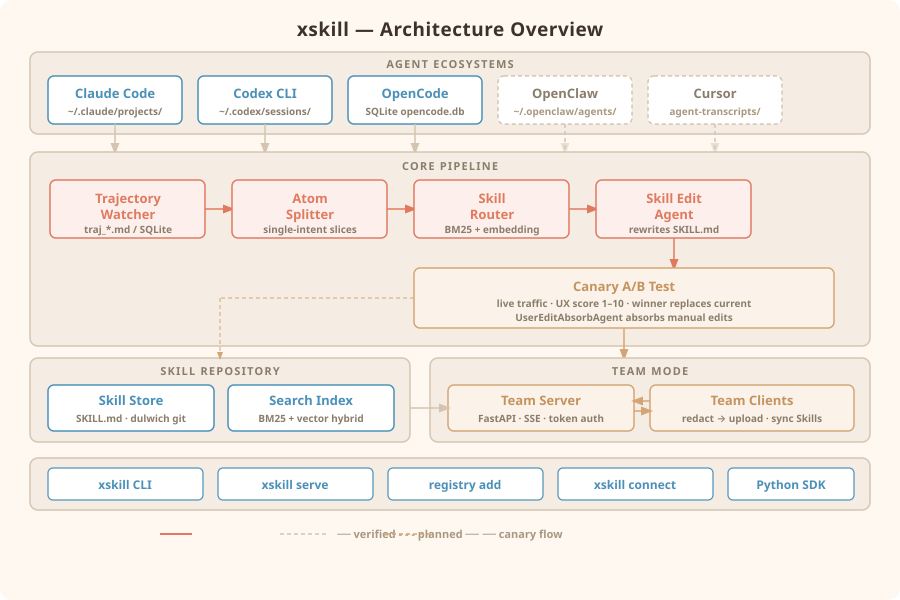

Overview
Quickstart
$ pip install xskill # Python 3.9+
$ xskill serve # writes ~/.xskill/config.yaml, then exitsskill_dir: ~/.xskill/skill
llm:
base_url: https://api.deepseek.com
model: deepseek-v4-flash
api_key: YOUR_KEY
embedding:
# DeepSeek has no embedding model; use DashScope / OpenAI / Ollama.
base_url: https://dashscope.aliyuncs.com/compatible-mode/v1
model: text-embedding-v4
api_key: YOUR_KEY
dim: 0$ xskill registry add /path/to/trajectoriesConcepts
Five terms cover the whole system:
| Term | Meaning |
|---|---|
| Trajectory | |
| Atom | |
| Skill | |
| Canary | |
| UX score |
How it works
Architecture

Supported agents
Trajectory ingest and Skill install are implemented per ecosystem:
| Agent | Status | Trajectory ingest | Skill install |
|---|---|---|---|
| Claude Code | verified | ~/.claude/projects/ | ~/.claude/skills/<name>/ |
| Codex CLI | verified | ~/.codex/sessions/ | ~/.agents/skills/<name>/ |
| OpenCode | verified | ~/.local/share/opencode/opencode.db | ~/.agents/skills/<name>/ |
| OpenClaw | implemented | ~/.openclaw/agents/ | ~/.agents/skills/<name>/ |
| Cursor | implemented | ~/.cursor/projects/*/agent-transcripts/ | ~/.cursor/skills/<name>/ |
| Trae | implemented | IDE state.vscdb / CLI trajectory_*.json | ~/.trae-cn/skills/, ~/.trae/skills/ |
| Any other agent | manual | xskill.adapters.submit_trajectory | copy / symlink SKILL.md |
Team mode
$ xskill serve --server # prints a join token
$ xskill connect <host:port> --token <token> --name <user-id>- —
- —
- —
- —
- —
Persistent client
$ xskill status
$ xskill stop
$ xskill startCLI reference
xskill serve [--host 0.0.0.0] [--port 8000] [--server]xskill registry <add|remove|list> [path] [--label LABEL]xskill search <traj|skill> <query> [-k/--top-k N]xskill connect [host:port] [--token TOKEN] [--name NAME] [--label LABEL] [--use-proxy] [--foreground]xskill statusxskill stopxskill startConfiguration
llm:
base_url: https://api.deepseek.com
model: deepseek-v4-flash
api_key: YOUR_KEY
rate_limit:
rpm: 60 # match your provider plan
tpm: 100000 # optional
burst: 10 # optional; default = ceil(rate/6)Roadmap
News
License
MIT © 370025263. See the LICENSE file in the repository.